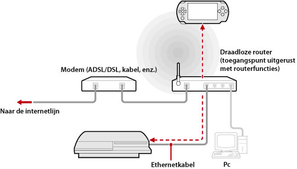
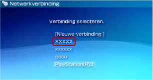

Netwerk > Remote-play gebruiken (via een toegangspunt)
Remote-play gebruiken (via een toegangspunt)
Sluit het PS3™-systeem aan op een toegangspunt met een Ethernet-kabel en gebruik de functie draadloos LAN van het PSP™-systeem om via het toegangspunt verbinding te maken met het PS3™-systeem.
Voorbeeld van een gewone configuratie

Opmerkingen
- Een draadloze router is een apparaat dat de functies van een toegangspunt aan een router toevoegt. Een toegangspunt is een apparaat dat toelaat om een draadloze verbinding met een netwerk te maken. Een router is een apparaat gebruikt bij het delen van een internetverbinding met meerdere apparaten.
- Een modem kan zijn uitgerust met de routerfuncties. Sluit het PS3™-systeem aan op een apparaat dat is uitgerust met routerfuncties.
- Als het toegangspunt en de modem beide zijn uitgerust met routerfuncties, schakel de routerfuncties van één van beide apparaten dan uit. Het PS3™-systeem en PSP™-systeem moeten worden verbonden binnen hetzelfde netwerk. Als twee of meer routers tegelijkertijd worden gebruikt, kunnen het PS3™-systeem en het PSP™-systeem worden verbonden met aparte netwerken en kunt u Remote-play mogelijk niet gebruiken.
Voorbereiden voor gebruik (PS3™-systeem en PSP™-systeem)
Als u Remote-play voor de eerste keer gebruikt, moet u het PSP™-systeem registreren (koppelen) op het PS3™-systeem. Registreer het systeem onder  (Instellingen) >
(Instellingen) >  (Remote-Play-instellingen) > [Apparaat registreren].
(Remote-Play-instellingen) > [Apparaat registreren].
Voorbereiden voor gebruik (PSP™-systeem)
Maak een netwerkverbinding om het PSP™-systeem te verbinden met een toegangspunt. Als in het PSP™-systeem al een netwerkverbinding is opgeslagen om verbinding te maken met een netwerk via een toegangspunt, hoeft u geen nieuwe netwerkverbinding aan te maken. Raadpleeg de gebruikershandleiding van het PSP™-systeem voor meer informatie over het maken van een netwerkverbinding.
Remote-play gebruiken
1. |
Selecteer |
|---|---|
2. |
Selecteer |
3. |
Selecteer [Verbind via privénetwerk]. |
4. |
Selecteer de verbinding voor het te gebruiken toegangspunt voor remote-play uit de lijst met verbindingen.  Als de verbinding voltooid is, wordt het scherm van het PS3™-systeem weergegeven op het PSP™-systeem. |
 (Netwerk) >
(Netwerk) >  (Remote-play) op het PS3™-systeem.
(Remote-play) op het PS3™-systeem. (Remote-play) op het PSP™-systeem.
(Remote-play) op het PSP™-systeem.Opmerkingen
- Remote-play kan worden gebruikt binnen het signaalbereik van het toegangspunt.
- Als u de instelling voor remote-start inschakelt op uw PS3™-systeem, dan kunt u uw systeem instellen zodat het automatisch wordt ingeschakeld (Wake-on LAN). In dat geval hoeft u de bovengenoemde stap 1 niet uit te voeren. Zie (Instellingen) > (Remote-Play-instellingen) > [Remote-start] in deze handleiding voor meer informatie.
Remote-play beëindigen
Druk op de PS-toets (HOME-toets) van het PSP™-systeem en selecteer [Eindigen Remote-play] > [Afsluiten en schakel het PS3™-systeem uit].
Opmerking
Selecteer [Afsluiten zonder het PS3™-systeem uit te schakelen] als u uw PS3™-systeem gebruikt om bestanden te kopiëren of om te downloaden in de achtergrond en andere taken uit te voeren waarvoor u uw systeem dient ingeschakeld te houden.